Музей Dendy от Steepler / Подделки
Практически любая фирма, производящая популярные товары, будь то часы или телевизоры, сталкивается с тем, что ее продукцию начинают подделывать. Не избежала такой участи и фирма Dendy - набрав в России большую популярность, приставки Dendy стали объектом подделок. Ситуация тем более комичная, если вспомнить, что и сами они были клонами восьмибитной Famicom от Nintendo.
Сейчас трудно сказать, насколько широко распространены были такие клоны, но то, что они были - вне всякого сомнения.
Фирма Dendy активно боролась с пиратством, рассказывая на страницах своего журнала "Видео Асс - Dendy - Новая реальность" о убогости и недолговечности "китайских подделок" и авторском праве. При этом откровенно кривила душой, умалчивая о происхождении и легитимности своих приставок и картриджей.
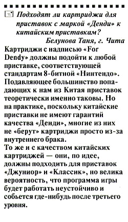
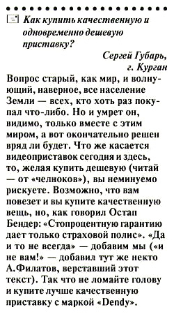
Из журнала "Видео Асс - Dendy - Новая реальность" 7'1994
Помимо вполне самостоятельных китайских приставок-фамиклонов, которые называли "Денди" скорее по инерции, имея в виду просто восьмибитную приставку, были и такие, которые эксплуатировали хорошо раскрученный бренд Dendy и весьма успешно притворялись "фирменными". Делалось это, по всей видимости, для улучшения продаж. О качестве этих приставок по сравнению с теми, что продавала Dendy, судить трудно, поскольку и те, и другие вели свое происхождение из азиатских стран вроде Тайваня и Китая, и были одинаково нелицензионными. Но не исключено, что качество было хуже.
К первой группе подделок можно отнести приставки, практически полностью повторяющие дизайн и упаковку "дендевских" приставок.
"Пиратский" Dendy Classic достаточно точно копировал внешний вид своего прототипа - отличить его от настоящего неискушенным взглядом трудно. Но, тем не менее, ряд признаков выделить можно:
- более округлые корпус и кнопки на корпусе
- резиновые ножки вместо пластмассовых
- надпись "ORDER NO" вместо "SERIAL NO" на стикере. Сам номер имеет нехарактерный префикс YZ
- отсутствие надписи "Made in Taiwan" на стикере
- плата внутри отличается от оригинальной
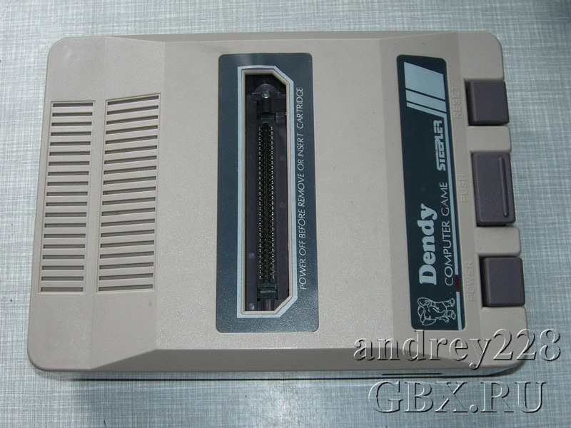
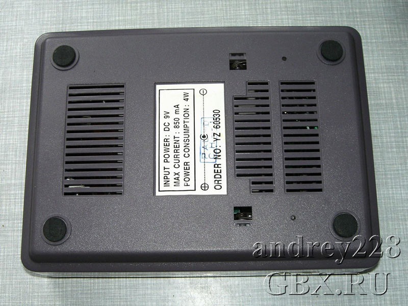
Пиратская приставка Dendy Classic
еще фото
Пиратский Dendy Junior имел отличную от оригинала компоновку пенопластового ящика - как видно на фото, приставка комплектовалась еще и пистолетом. Кроме того, стоит отметить:
- отдельный порт для пистолета, расположенный между разъемами для джойстиков
- 9-пиновые разъемы (в оригинале 15-пиновые)
- неаккуратное воспроизведение логотипа Dendy, утолщенные буквы
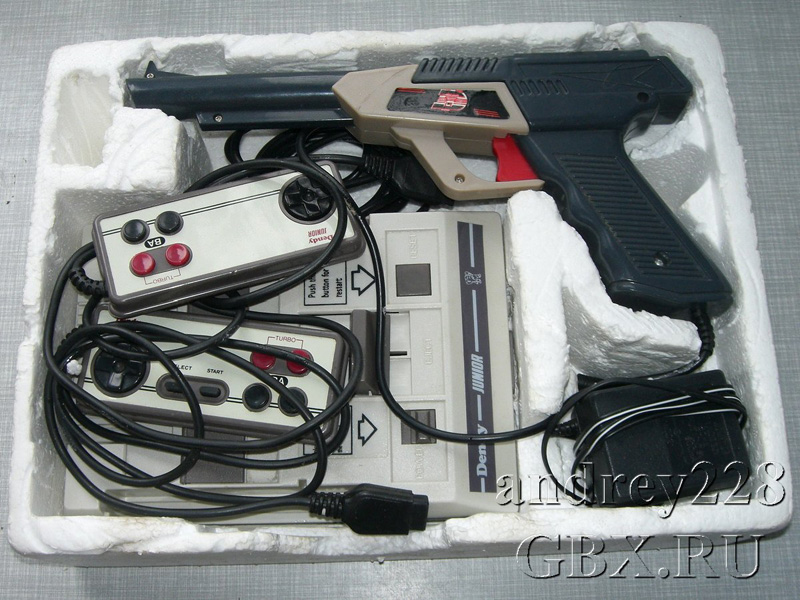
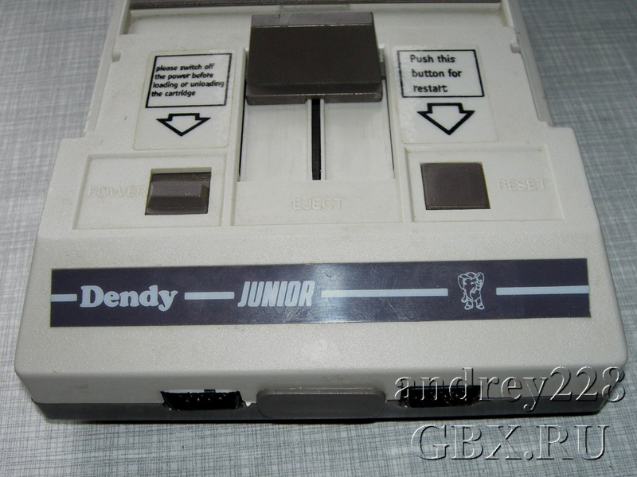
Пиратская приставка Dendy Junior
еще фото
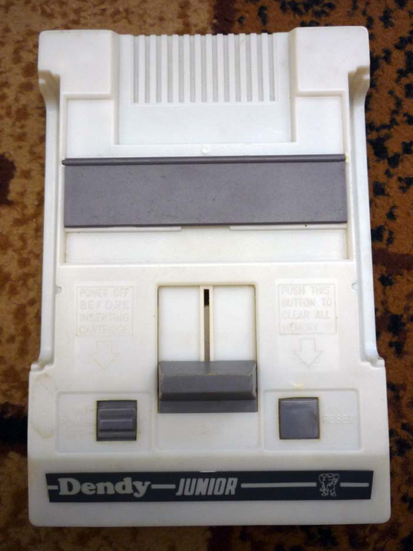
Другой вариант Dendy Junior
Были среди подделок и такие, которые очевидно притворялись новыми моделями Dendy. К ним можно отнести две модели Dendy Junior II и Dendy Junior III. Приставки, скорее всего, польского происхождения, о чем свидетельствуют польские надписи на коробках и слово "PEGASUS" на обороте пенопластового ящика одной из приставок. Внешне они очень похожи на Dendy Junior, описанный выше, но имеют собственный дизайн коробки, который, впрочем, одинаков для обеих. Различается только порядковый номер модели и год выпуска. Логотип Dendy на пистолете и консолях выполнен небрежно, различия очень хорошо видны.
Несмотря на то, что в коробку с Dendy Junior III вложены инструкция и гарантийный талон на русском языке - с высокой вероятностью это подделка, так как качество их печати заметно хуже, а также отсутствует регистрационная карточка.
Приставки этого типа (как видно из комплекта Junior III) комплектовались картриджем "999 в 1". Вполне вероятно, что картриджи, имеющие надпись "Dendy Junior" и логотип белой краской около разъема, также следует считать "подделками"
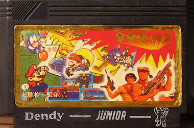
Картридж Dendy Junior
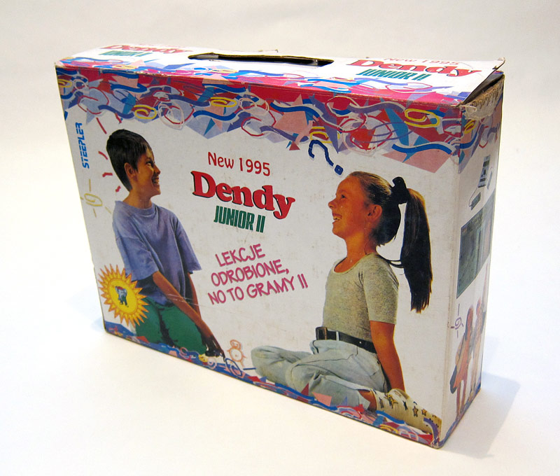
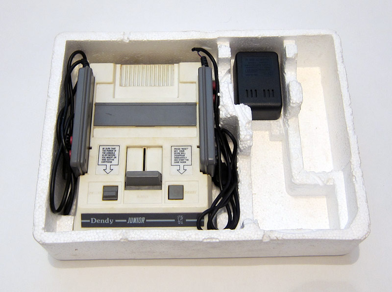
Пиратская приставка Dendy Junior II
еще фото
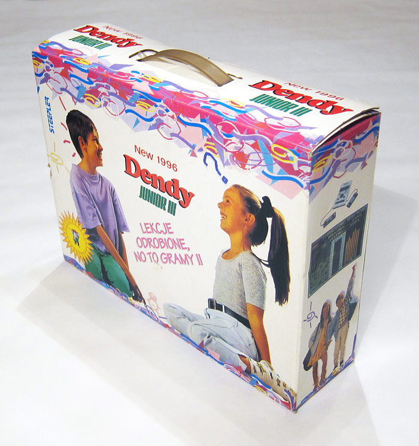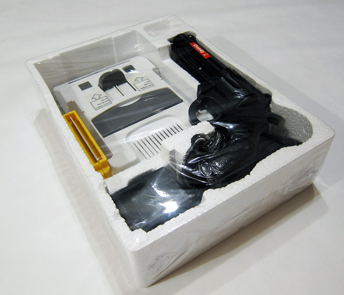
Пиратская приставка Dendy Junior III
еще фото


Известен также еще один клон невыясненного происхождения - Dendy Eagle. Как видно, комплектовался он джойстиками, по форме копирующими джойстики от SNES, и пистолетом. Логотип Dendy на инструкции - позднего типа, в овале, и по всей видимости приставка выпущена не ранее 1996 года. Единственный найденный ее экземпляр продавался на украинском аукционе в Полтаве, но дальнейшая судьба его неизвестна.
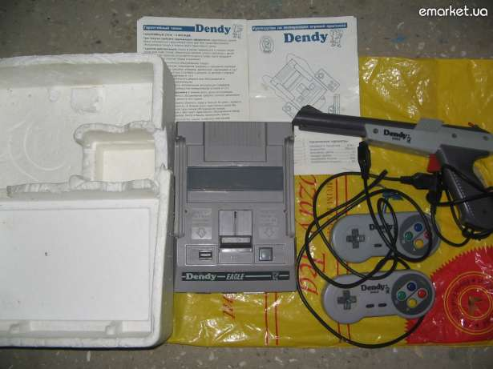Отдельно нужно отметить Dendy Junior III, не похожий ни на одну из приставку из линейки Dendy. Дизайн коробки аналогичен дизайну Junior II, но сама коробка заметно меньшего размера.
Качество изготовления очень низкое - отклеивающиеся лицевые панельки джойстиков, расплывшийся логотип Dendy и текст инструкции. Более того, только что распечатанный экземпляр оказался нерабочим.
По всей видимости, именно поэтому во избежание путаницы «официальная» модель Junior III так и не вышла.
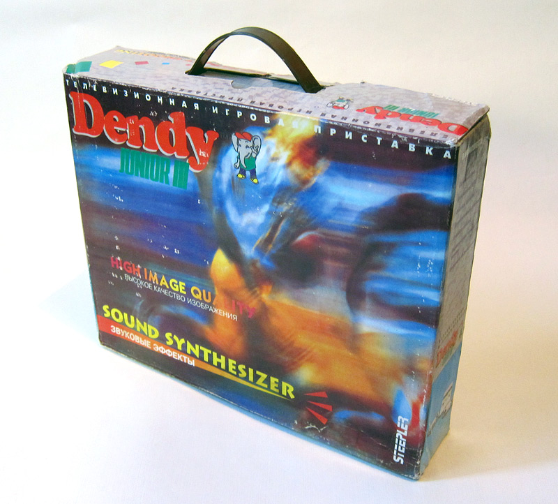
Пиратская приставка Dendy Junior III
еще фото
Интересен экземпляр приставки Zoga с дизайном коробки, сходным с Junior IVP. Дизайн содран абсолютно бездумно, так как, несмотря на надпись на коробке, приставка никак не могла комплектоваться световым пистолетом по причине малых размеров коробки. Сохранен даже логотип Steepler - очевидно, чтобы ввести покупателя в заблуждение. Качество изготовления заметно ниже аналогов от Micro Genius.
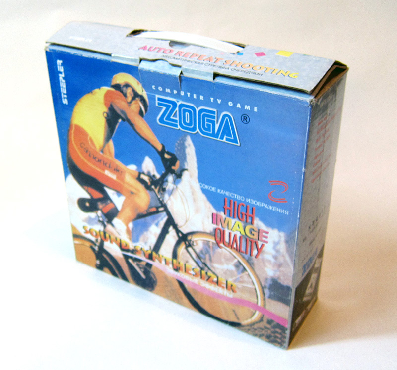
Приставка Zoga
еще фото
И в завершении обзора - пара советов от Dendy. Покупайте наших слонов и остерегайтесь подделок!